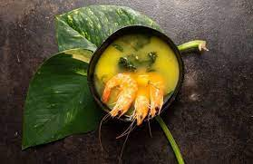
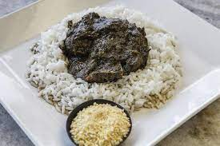
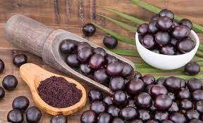
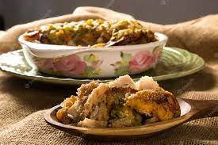
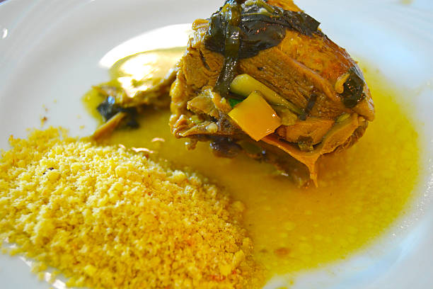

Tacacá: Sopa típica do Pará, feita com tucupi (um caldo extraído da mandioca brava), jambu (erva que provoca uma sensação de dormência na boca), camarão seco e goma de tapioca.
Maniçoba: Prato típico do Amazonas, feito com folhas de maniva (maniocas moídas e cozidas por aproximadamente uma semana), carnes defumadas, legumes e temperos diversos.
Açaí: Fruto típico da Região Norte, é consumido principalmente na forma de sucos e cremes, acompanhado de granola, banana, mel, entre outros ingredientes.
Pirarucu de casaca: Prato do Amazonas preparado com pirarucu (um dos maiores peixes de água doce do mundo), cozido e desfiado, misturado com farinha de mandioca e temperos, e gratinado com queijo.
Pato no tucupi: Prato tradicional do Pará, que consiste em pato cozido no tucupi, acompanhado de jambu e arroz.
